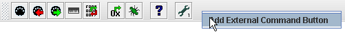
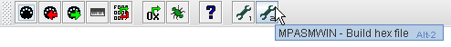

Running External Commands
Buttons can be added to the MIOS Studio toolbar to launch external commands, run scripts, etc. To setup an external command button:
- Right-click on the MIOS Studio toolbar and select "Add External Command Button".

- On the newly added button, right-click and select "Properties" to bring up the External Command Button Properties box.

- In the External Command Button Properties box, add a name and/or a description for the button in the 'Command Name' field. Add the command to be run in the 'Command String' field - this is the command that you would us in a shell prompt, shortcut, run dialog, etc.

- After pressing 'OK', the button will be configured to run the external command when pressed. Keyboard shorcuts (Alt + 1..9) will be automatically assigned for the first 9 external command buttons added to the toolbar.
